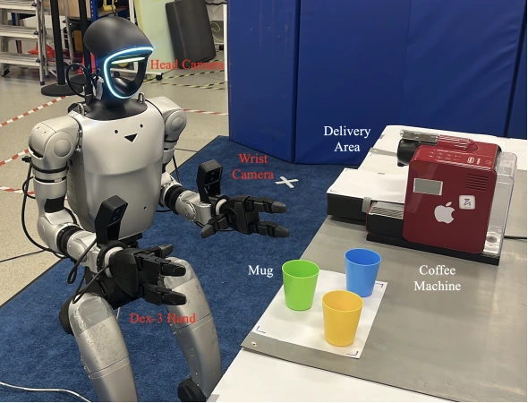
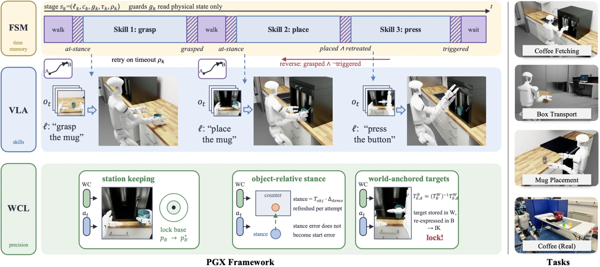
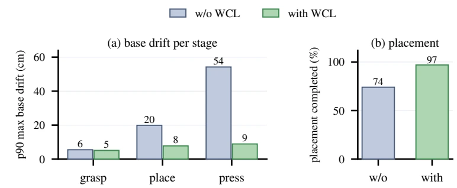
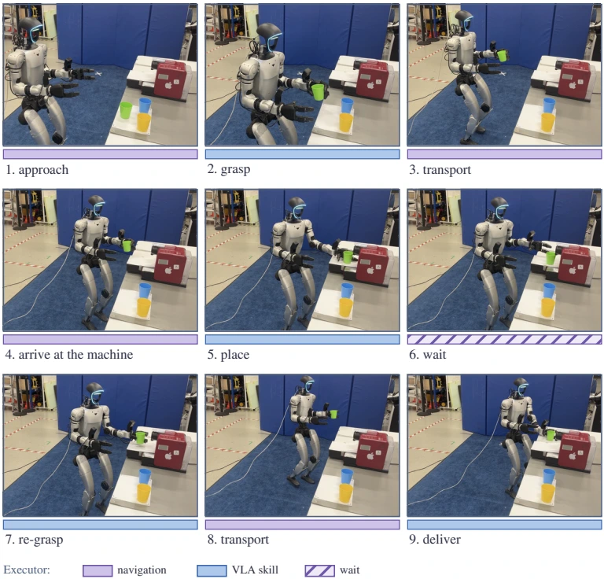
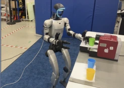
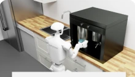
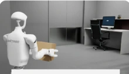
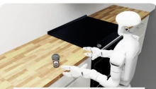

01WHEN
Timing
Predicate-gated state machine
Advance on physical outcomes. Coordinate navigation and waiting; retry failed guards and reverse premature transitions.
Task progress + recovery
ICRA 2027 · Research project
Physical structure decides when and where to act. Vision-language-action models learn how.

35→80%
GR00T N1.6 · nominal simulation
Same policy weights · Table III
54→9cm
p90 maximum drift under sustained
disturbance · π₀.₅ · Fig. 5
3+1
Three simulated tasks and one
real Unitree G1 task
01 / Overview
Long-horizon humanoid tasks combine walking, contact-rich manipulation, device interaction, and waiting. A flat policy must keep track of task progress while its own moving body changes the reference frame for precise actions.
Physically Grounded Execution (PGX) assigns task progression to a predicate-gated state machine and spatial consistency to world-coordinate locking (WCL). The VLA executes manipulation skills inside the active stage. Shared physical predicates connect demonstration segmentation, online transitions, and stage-wise evaluation.
The execution components are training-free. The skill backbones are fine-tuned VLAs; stage-wise training is a separate, optional choice.
02 / Method
Three responsibilities.
One physically grounded execution interface.
Advance on physical outcomes. Coordinate navigation and waiting; retry failed guards and reverse premature transitions.
Execute local manipulation from an executor-prepared start state. Use flat or stage-trained skills with π₀.₅ and GR00T N1.6.
Maintain object-relative stances and base station keeping. Anchor fine contact targets in the world frame for WCL-P pressing.

Simulated task: eight stages. The executor handles the wait between press and re-grasp. Five manipulation stages use the VLA; WCL-P replaces the button stage with a world-anchored primitive.
03 / Quantitative results
Isaac Lab Arena · Unitree G1
20 episodes per condition unless noted
Table III isolates execution structure: the flat policy weights and task-level instruction stay fixed when the model is placed inside PGX.
+45 percentage points
+60 percentage points
| Backbone / condition | Flat execution | PGX + flat skills | PGX + stage skills |
|---|---|---|---|
| π₀.₅ · C0 | 0 | 60 | 60 |
| π₀.₅ · C1 | 0 | 60 | 55 |
| GR00T N1.6 · C0 | 35 | 80 | 35 |
| GR00T N1.6 · C1 | 20 | 80 | 35 |
Stage-wise training is model-dependent: the flat GR00T skill model is stronger on coffee fetching in these experiments.
End-to-end success from Table II, shown separately from object-lift progress.
| Task | Backbone | Nominal · C0 | Random initial pose · C1 | ||
|---|---|---|---|---|---|
| Flat | PGX | Flat | PGX | ||
| Box transport | GR00T N1.6 | 55 | 75 | 20 | 45 |
| π₀.₅ | 10 | 90 | 5 | 60 | |
| Mug placement | GR00T N1.6 | 15 | 65 | 5 | 70 |
| π₀.₅ | 0 | 75 | 0 | 90 | |
| Coffee fetching | GR00T N1.6 | 35 | 80 | 20 | 80 |
| π₀.₅ | 0 | 60 | 0 | 55 | |
C1: uniform initial offsets of ±0.30 m in both translation axes and ±30° yaw. Time budgets: box 40 s, mug 60 s, coffee 110 s. PGX uses stage-trained skills for box and mug; for coffee, stage-trained π₀.₅ and flat-trained GR00T. These main comparisons therefore do not all hold skill weights fixed.
Precision ablation
With sustained base disturbance, WCL reduces press-stage p90 maximum base drift from 54 cm to 9 cm, and completed placement attempts rise from 74% to 97% (π₀.₅, C0).
Separately, WCL-P completes 243/245 button-stage entries across 14 evaluation runs without sustained disturbance. This is conditional button-stage completion, not end-to-end task success.

04 / Real-world execution
The real robot walks to the counter, grasps the mug, carries it to the machine, places it, waits, re-grasps, and delivers it.
Vicon and joint states supply physical predicates. The policy is fine-tuned on 44 real demonstrations; simulation and real policies are trained separately.
The paper reports stage-wise completion on hardware. The remaining transfer gap is concentrated at placement and re-grasping.
The real task shown here does not evaluate button pressing. No aggregate real-world task success rate is inferred from the stage-wise figure.

05 / Demonstrations
Video placeholders
Stills are taken from the paper

Video forthcomingNavigate, place, wait, re-grasp, deliver.

Video forthcomingEight stages, including device interaction.

Video forthcomingBimanual pick-up, carry, and delivery.

Video forthcomingSingle-hand transfer to a target region.